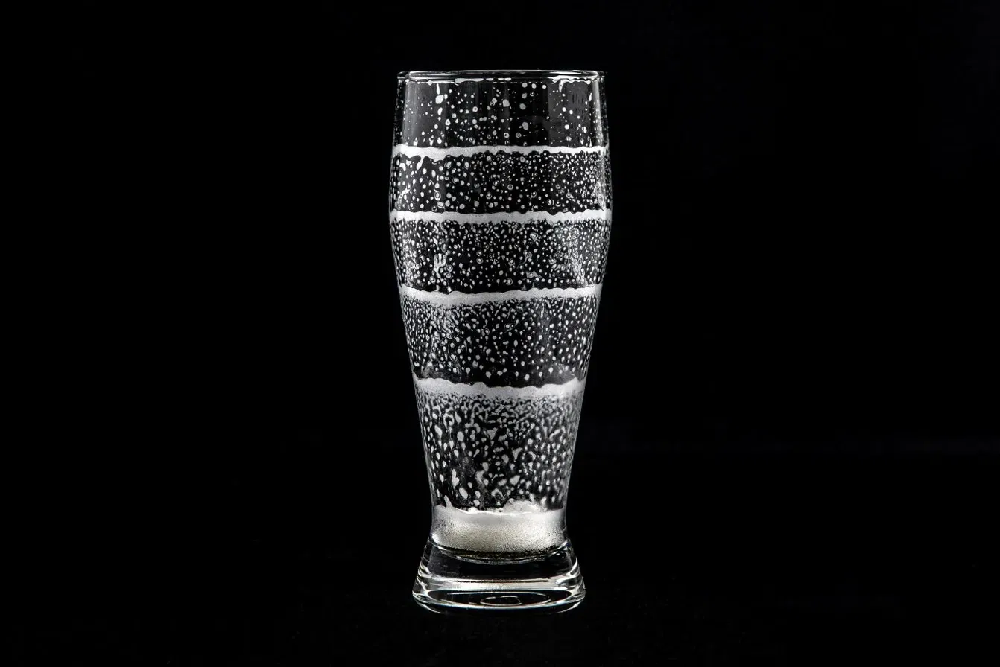

ハッピーリング採点チャレンジ
泡の輪を撮るだけで
100点満点で採点
美味しいビールがある
-
1
美味しい
ビール - 2 飲む
-
3
ハッピー
リング
お酒は20歳になってから。飲酒運転は法律で禁止されています。
遊び方
高得点をねらう三か条
- 一一口飲んだら、ジョッキを置く泡が落ち着いて、水平な輪が残ります。
- 二いつも同じ飲み口から違う場所から飲むと、せっかくの輪が流れてしまいます。
- 三4〜5口で、テンポよく飲み干す5口で飲み切ると輪は4本。これが理想の一杯です。
理想のハッピーリング
目指すのは、こんな一杯です。

- 4本5口で飲み切る
- 水平だれずに一周
- 等間隔同じ量ずつ
上手な撮り方
この4つを守ると、輪がきれいに読み取れます。
-
ロゴのない面を、金の枠に合わせるロゴや絵柄は輪とまぎれます。上の縁から底まで枠の中へ、取っ手は枠の外に出します。
-
真横から、スマホを立てて撮るジョッキと同じ高さで。上から見下ろすと輪がゆがみます。
-
外側の水滴をおしぼりで拭く水滴や霜があると、輪が見えにくくなります。
-
明るい場所で、後ろはすっきり白い壁や明るい照明の下で。ごちゃごちゃした背景は避けます。
× ロゴの面× 上から撮る× 近すぎて切れる× 暗い・逆光
採点についてしっかりした泡の輪でないと、輪として数えません。背景・明るさ・撮る角度・残ったビールなどによって、正しく判定できないことがあります。点数はあくまで目安としてお楽しみください。
ジョッキを撮る
※ くっきりした泡の輪だけを数えます。背景や撮り方、残ったビールなどで、正しく判定できないことがあります。
ジョッキを囲む
金の枠の角を動かして、取っ手を入れずに
ジョッキの胴(上の縁から底まで)を囲んでください。
ただいま審査中…
泡の輪を一本ずつ見ています
採点結果
採点票
0点
次のコツ
採点についてしっかりした泡の輪でないと、輪として数えません。背景・明るさ・撮る角度・残ったビールなどによって、正しく判定できないことがあります。点数はあくまで目安としてお楽しみください。
ランキング TOP5
この端末で記録した一杯のランキングです。
読み込み中…